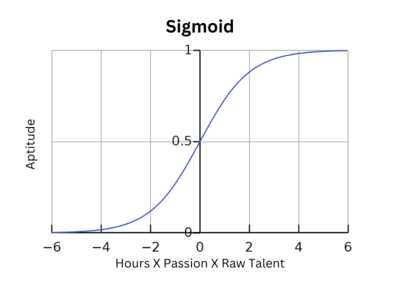

These are truths which are often misconceived. They lead to doubts, slower learning and misaligned values.
I wish to express what really happens as a programmer.
These are 6 myths and the truths behind them.
You have to be young
I have met people over 50 who are learning programming just as fast as me, perhaps better because they were more mature.
They made the switch as a discovery of programming and loved it, even getting work before I ever did.
3 guys in my friend group got engineering jobs at those ages and were quite good. They even had a family and all so it was quite impressive.
Really, what is more important, number of years programming or starting age programming?
I would say the answer it is 1st # of hours programming then 2nd passion put into it.
Hours X Passion = Competence.
It is not...
Hours X Passion - Age = Competence.
But let's make a model of this. To do so we should consider other things...
I must admit some people do struggle to learn technology. They are better with their hands, cooking, socializing, art, etc. I believe that phenomenon is irrespective to programming. It is more an aptitude trained over time.
This type of person, without passion, even if they were young would probably still not have done well.
As an example, me in particular am very bad with my hands. I can't cook or create art. I had to train my socializing skills for years just to be above average (people say I am great at socializing). At this point, I am very specialized in programming by aptitude.
People in general are like that. They have their own aptitudes trained both with raw talent and time.
If you already had the inherent aptitude, you could regain it later in life. Yes there is such a thing as rusting with age, but that is more a point of personal biological age.
Biological age is not necessarily age itself. We can be 20 with a biological age(of the brain) of 70. And we can be 60 at the biological age (of the brain) of 25.
Here is a more accurate model with biological age, raw talent and natural aptitude involved. Biological age, natural aptitude and raw talent are between 0 and 1
Aptitude = Sigmoid(Hours X Passion X Raw Talent)
Hours X Passion X (1 - biological age) X (0 + Aptitude) = competence
What gives the young programmers a bigger advantage is more the # of years put into it.
If you start at 10 years old you will be 20. If you start at 20 you will be thirty.
It would take someone starting at 30 to be 50 by the time they get to those numbers versus a young person.
That is more the phenomenon than age itself.
You have to memorize everything
Programming is an evolving beast which you can't memorize.
Even if you did memorize the code, the libraries, language and methods change every year.
Instead we memorize the concepts behind the code. This is so you can adapt to any library which uses the same concepts.
This is a common mistake beginner programmers make. They try to memorize everything.
There are specific things we should memorize and code is not one of them. Syntax, functions, classes and arguments are not what we should memorize.
Instead we need to remember where we can find that knowledge, not the knowledge itself.
Coding does not require memorization, instead what we depend on is our unconscious learning and where to find the information.
Memorization should be reserved for terminology, core niche concepts and overarching themes.
When I code, I do review what I learned, but it is not the code itself. Its all the other stuff.
As we code we place an impression on our minds, a neurological imprint. That is more the goal.
I do review terminology, core concepts and overarching themes throughout the day as I go about my business.
Even with that I place those concepts in a reference manual which I review years later when I return to the topic.
All the code that came with it naturally fits into the new libraries of the era, as the concepts are re-used but the modern code has changed.
This is why reference manuals are so good, if used correctly. They bring your future self to the present.
Here is an article talking about it: How to Write a Great Coding Reference Manual to Teach Your Future Self
You can master programming
Mastery of programming is a myth. But the 10x developer is real.
It can take many years and many hours to get good at programming.
The Primeagen on YouTube often states it takes 10 years to get decent at programming.
These are the numbers we should be thinking. Long-term dedication is the way. Daily practice is the way.
We get smarter, faster, cleaner as we code every day and one day we are okay at it.
Even after 20 years, The Primeagen says, I am learning programming. There is no such thing as mastery. There is an infinite upper bound of skill. It feels great to get to the higher levels, but damn does it take a long time.
A 10x developer is someone who can manage other developers and can pump out vast amounts of code both by themselves and in a team, cleanly and with performance.
It is about high output and leadership. That takes a very long time and it is never ending.
Even that 10x developer is not a master programmer. There is always a way to get better and it starts with getting good at code today.
One day you will reach a maximum ability to output code in one niche. But, it is not because you maxed out. It is because you are one person with only 24 hours in a day. Even as one person, youll be surprised how much these individuals can produce. It is much higher than you think.
One day you will need to multiply your output to go further and that is when you need a team.
Programming is solitary
No matter who you are, you are not learning in solitary. You are learning from others constantly, not by yourself.
This should be the most obvious thing. The documentation, the library, the framework, the project, they all are built by people, teams.
Programming is a group activity, not a solitary skill. Friends, fun, social events and leadership are a part of coding. You need soft skills to work in a team.
How you treat our fellow coder matters.
It can determine your future as a coder. Programming will attract a specific crowd to you. This crowd involved many many developers who are at a much higher level. These are the cats that will lift you up.
They determine your pull requests, they can tutor you, mentor you, inspire you.
Grace is a wonderful attribute in a programmer, leadership and patience as well.
Communication is for programmers. Communication is a virtue.
You need to be smart
This is something I had believed up until about 2 years into my programming learning.
I met people who started at the same time as me. They didn't seem all that smart and I wasn't all that smart either.
But all of us became smarter as we learned to code. I was amazed at all of our progress as we continued.
One person in particular was so impassioned about programming he would do it all day and became more and more frenzied intellectually.
It was like programming unlocked some hidden genius within him. That guy especially loved LeetCode which he credited with improving his raw intellect. He did something like 400+ problems over 2 years.
If you are curious about the two intellectual skills which programming supports, here is a blog article about it:
Two Vital Skills to Learn Code Faster: Debugging and the Dry Run
These two skills, debugging and dry running, are the core skills which make you smarter as a person
Programming is not something you do because you are smart. It is vice versa, you become smart because you are learning programming.
You need to have a deep math background
You'll be surprised how easy it is to learn programming with little math.
This is especially true with web development and recently machine learning.
All the math has been abstracted away into higher libraries.
Yes more math is better, but the core logic of programming requires simple algebra and nothing more.
Even low level programming is not so math heavy, it is more logic than anything.
Though, there are specific things that do require up to Calculus 1, trigonometry and Linear Algebra. But that is it. That is the most math you need.
You don't need the higher forms of Calculus and math. It is simply too theoretical to be useful in programming.
These specific topics requiring all this are graphics programming, non-abstract machine learning and game development.
But keep in mind we are talking about highly educated and customized programming.
Considering that, this is a low requirement. Calculus 1, trigonometry and Linear Algebra are considered a low requirement (statistics for machine learning too). They enable you to do research in graduate school and get to the highest rungs of programming. Just for that fact that its all you need to go to max programming, it is a low requirement.
For abstract machine learning, general programming, web development, database development and so many other types of coding you don't need that much math.
Anywho, I hope you learned something...
CTA: Check out my book on learning code
Happy coding!
Resources
The fundamentals of coding: Why Coding Fundamentals Are Important & Questions You Should Be Asking